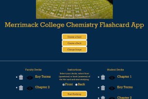
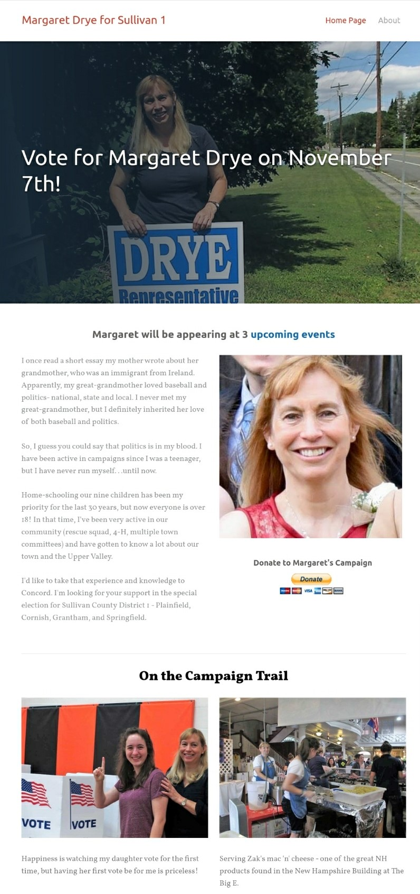
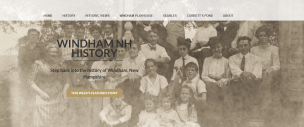
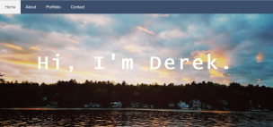
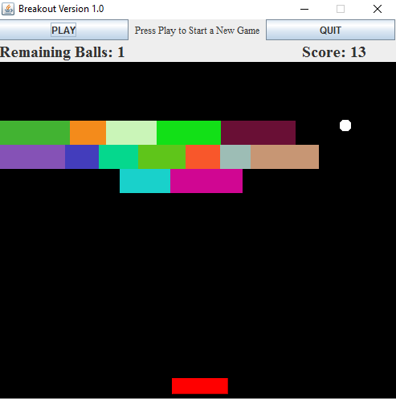

Chemistry Flashcard Web App
Chemistry Flashcard Web App
Worked in a team to develop a flashcard web application using Javascript, PHP, HTML, and CSS. Project included designing and accessing a database using SQL in PHP, session storage, user authentication, as well as storing and retrieving uploaded files.
Contributor to Lone Conservative
Author of Historic Tales of Windham, a collection of stories from Windham's history from its founding to present.
Contributor to The Rouser

Designed and managed campaign website for NH State Rep candidate Margaret Drye.

Designed and update website devoted to Windham, NH history, including a bi-weekly blog post.

Contributor to Red Alert Politics

Personal website of Derek Saffie
Personal website of Derek Saffie
Built using HTML, CSS, Javascript, and Bootstrap.
